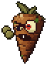

Enemies
The rotten vegetables that come in waves.

ZombieA rotten carrot that shambles toward the nearest player with its arms out and slaps them.- JackoA jack-o'-lantern on stubby vine legs that sprints at the nearest player, lights its fuse and blows itself up.
- Spear-GusA tall asparagus sniper that drops onto a high perch, puffs up its cheeks behind a laser sight and spits a glowing scale at you.
- ShroomA portobello outlaw with a pistol in each hand that keeps its distance, takes aim and fires short bursts of slow glowing slugs.
- Hot PepperA big hot-headed chili brute that lobs fireballs from afar, advances step by step, and breathes fire at point-blank range.
- Big CobberThe Corn Ogre, a giant ear of corn in a husk jacket that stumbles after players, peels its husk open and sprays a sweeping volley of red-hot kernels.
- Potato BullA lumpy potato on four stubby legs that paws the ground, charges in a straight line, and is left stunned and open if it slams into a wall.